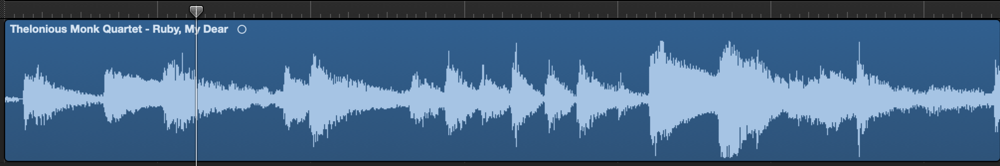
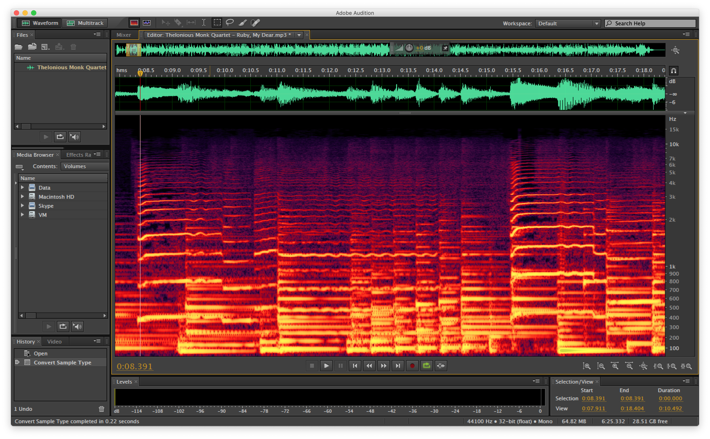
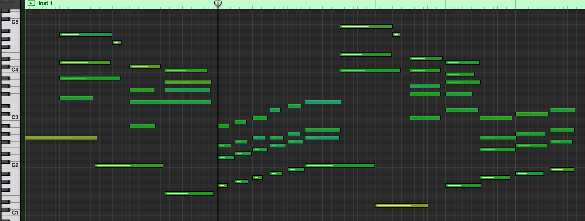
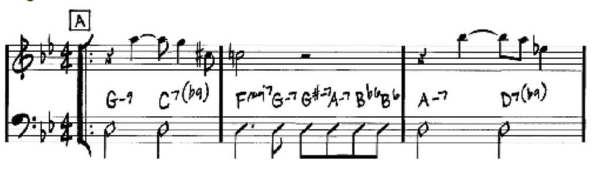

Isolated Electric Piano:

Electric Piano + Drums:

Electric Piano + Drums + Bass:

Electric Piano + Drums + Bass + Strings + Synthesizers:

The following figures are four ways to represent the same audio: "Ruby My Dear" by Thelonious Monk
Here is what the first 15 seconds of the song sounds like:
Waveform:
Spectrogram:
Piano Roll:
Notation:
